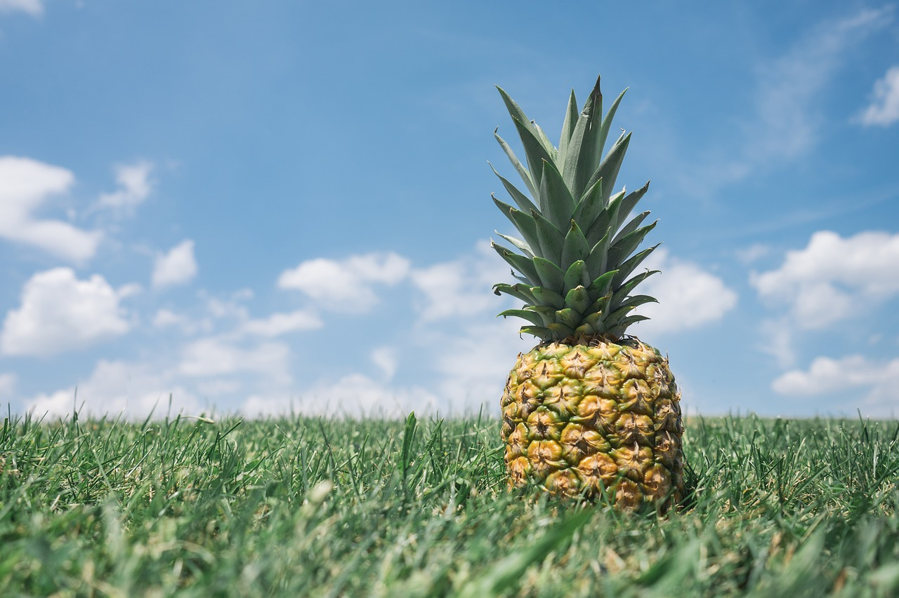
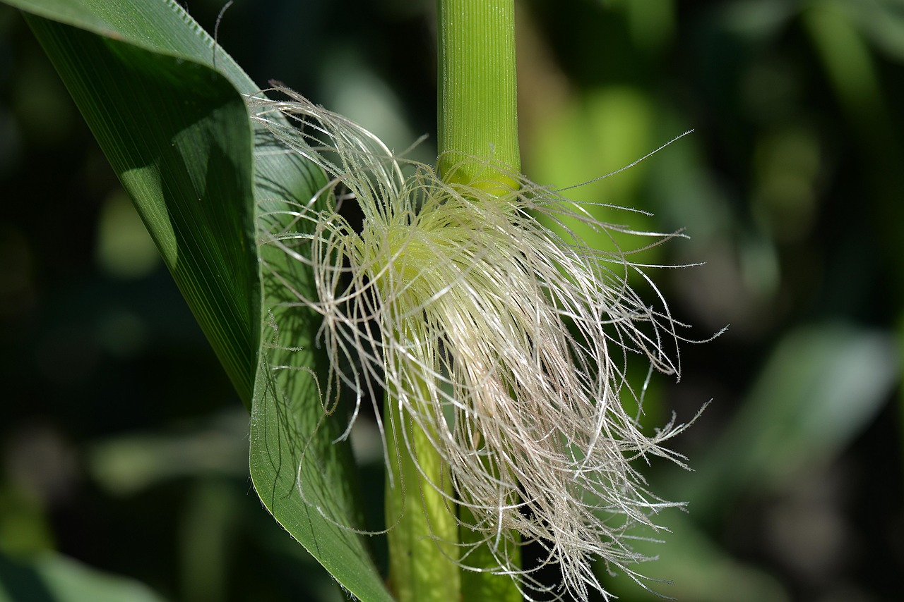
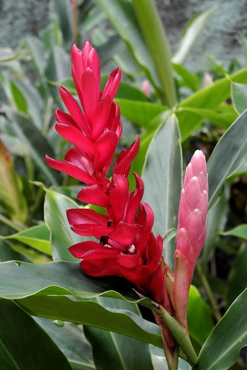
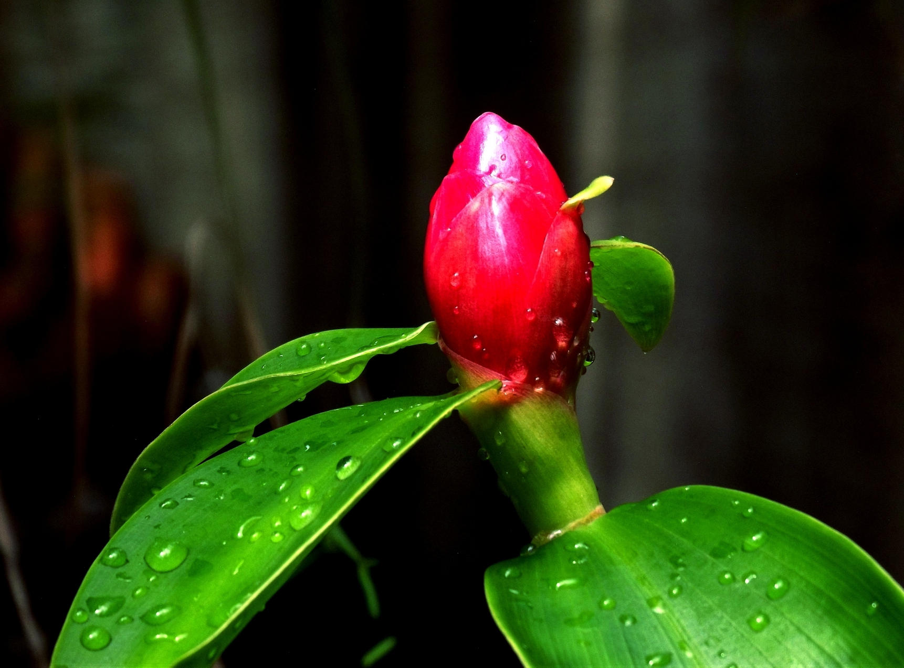
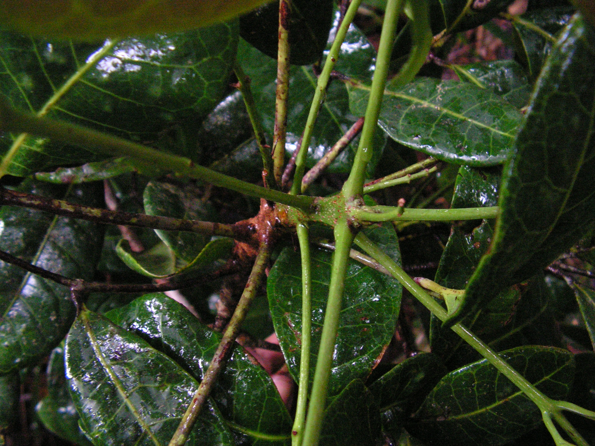

pesquisar Planta
ABACATEIRO
(Persea gratissima) combate artritismo, elimina cálculos renais e do fígado, é diurética. Usar as folhas secas. Contraindicação: palpitação cardíaca, pressão baixa. Sua toxidez é mínima. Seu poder curativo é de 33%.

ABACAXÍ
(Ananas sativus) é desobstruente do fígado e digestivo, auxilia a curar dores de garganta e bronquite, combate prisão de ventre. Contraindicação: colite, acidez do estômago, aftas. Sua toxidez é zero. Seu poder curativo é de 38%.
ABÓRBORA
(Cucurbita pepo) as sementes são vermífugas, inclusive para eliminar solitárias misturadas com açúcar e leite em jejum. Com o suco das folhas e flores se trata inflamações do ouvido, da próstata, erisipela, queimaduras, problemas renais e da bexiga. Não tem contraindicação e nem toxidez. Seu poder curativo é de 21%.
ALECRIM DO JARDIM
(Rosmarinus officinalis) é tônico cardíaco, combate gases intestinais, indigestão, nervosismo, menstruações irregulares e difíceis e é indicada para fígado e intestinos. Deve ser evitado por quem tem pressão baixa. Sua toxidez é mínima e seu poder curativo é de 28%.
ALECRIM DO CAMPO
(Baccharis dracunculifolia) combate bronquite, gripe, problemas de garganta, herpes. Tem 42% de poder curativo.
ALHO
(Allium sativum) bronquite, gripe, abaixa a pressão (usado em tintura), combate diabete, febre, vermes tomado com leite ou limão. Deve ser evitado por quem tem doenças renais, pressão baixa, úlceras, gastrite, colite. Sua toxidez é mínima e seu poder curativo é de 46%AÇAFRÃO
(Curcuma longa) é digestivo, diurético, calmante, combate cólicas, é bom para os rins e bexiga. Deve ser evitado por quem tem pressão alta, problemas cardíacos e urina solta. Sua toxidez é mínima. Seu poder curativo é de 26%.
AÇOITA CAVALO
o (Luehea divaricata) combate gripes, tosses, cãibras de sangue, insônia, disenterias, a casca é depurativa bem como as folhas. É contraindicado para quem tem pressão baixa. Sua toxidez é baixa e seu poder curativo também, 24%.AGRIÃO
o (Sizymbrium) comer e tomar o chá é bom para reumatismo, pulmões, rins e fígado e ajuda eliminar seus cálculos, limpa o sangue. Contraindicações: gravidez, colite. Sua toxidez é zero. Seu poder curativo é de 36%.AMOREIRA
(Marus alba) existem a preta, a branca e a vermelha. A amora branca é usada na menopausa, combate inflamações da garganta e amígdalas, usadas em forma de gargarejos. Abaixa a pressão. Deve ser evitada por quem tem pressão baixa, gastrite e úlcera. Sua toxidez é baixa e seu poder curativo é médio, 35%.
ANGÉLICA DO JARDIM
(Angélica archangelica) digestiva, combate cólicas, bronquite, enfermidades da garganta, pulmões e fígado, rins, e bexiga, convulsões, cãibras e cólicas. Deve ser evitada por quem tem pressão alta e problemas cardíacos. Seu poder curativo é de 34%. Sua toxidez é baixa.ANGICO
(Piptadenia colubrina) o chá da casca combate diarreia, disenteria e anginas, é grande depurativo, combate gonorreias. Deve ser evitado por quem tem problemas cardíacos e pressão baixa. Sua toxidez é baixa. Seu poder curativo é de 32%.ALCACHOFA
(Cynara scolymus) é ótima para o fígado, vesícula, digestão, elimina ácido úrico, é forte diurética, combate reumatismo. É contra-indicada para quem tem urina solta. Sua toxidez é mínima. Seu poder curativo é de 47%, excelente.
ALFAFA
(Mendicago sativa) combate anemia, urina solta, é calmante dos nervos, é reconstituinte, abre o apetite, combate apendicite. Deve ser evitada por quem tem pressão alta. Seu poder curativo é de 35%.ALFAVACA
(Occimum canum) é diurética, estimulante, serve para gargarejos nas aftas, combate anginas, areia dos rins, aumenta a pressão, combate tontura, melhora as digestões. Deve ser evitada por quem tem urina solta. Seu poder curativo é de 23%.ARAÇÁ
(Psidium cattleianum) utilizam-se raízes, cascas e folhas para combater as diarreias, disenterias, hemorragias, problemas cardíacos e urinários. Seu poder curativo é de 17%. Sua toxidez é mínima.ARRUDA
(Ruta graveolens) combate vermes, mata piolhos, o suco colocado no ouvido combate o zumbido, elimina gases intestinais, combate dor de dente e de cabeça. Deve ser evitada na gravidez, nas palpitações cardíacas e na pressão baixa. Só pode ser usada por 10 dias internamente. Sua toxidez é alta e seu poder curativo é baixo, 16%.
ARTEMÍSIA
(Artemisia vulgaris) combate vermes, gases, anemia, fraqueza geral, doenças do fígado, afecções uterinas, acalma os nervos. Deve ser evitada por quem tem cálculos e areia nos rins. Sua toxidez é mínima e seu poder curativo é 22%ASSA-PEIXE
(Vernonia polyanthes) combate tosse, asma, pontadas no peito, gripes, afecções do útero, contusões. Deve ser evitada por quem tem úlcera e gastrite. Seu poder curativo é de 35% e sua toxidez é baixa.AVEIA
(Avena sativa) é fortificante para crianças e idosos, é recomendada para doenças do aparelho urinário. É alimento ideal para os que sofrem de pressão baixa. Deve ser evitada por quem tem pressão alta, colite, obesidade e alergia. Seu poder curativo é de 33%.AVENCA
(Adiantum capillus) combate catarro pulmonar, tosses, bronquite, diarreia, disenteria, gripe e calvície. Deve ser evitada por quem tem prisão de ventre e urina presa. Sua toxidez é baixa, bem como seu poder curativo, 14%;BETERRABA
(Beta vulgaris) combate anemias, o chá das folhas elimina cálculos renais, é bom para o fígado, rins e baço. Deve ser evitada pelos diabéticos e por quem tem pressão alta. Seu poder curativo é de 34%.BOLDO
(Coleus barbatus) é conhecido também por boldo graúdo e falso-boldo. Serve para combater males do intestino, estômago, fígado, pressão alta, dor de cabeça. Deve ser evitado por quem tem colite, úlcera e pressão baixa. Sua toxidez é alta por isso o chá deve ser fraco e por pouco tempo. Seu poder curativo é de 36%.

CABELO DE MILHO
(Zea mays) é diurético, combate afecções da bexiga e dos rins, cistite, areias, dores ao urinar, albuminúria. Deve ser evitado por quem tem urina solta. Sua toxidez é mínima. Seu poder curativo é de 22%
BABOSA
(Aloe vera) serve para aplicar nas hemorroidas, sobre queimaduras, feridas, para madurecer tumores aplicando sobre eles. Internamente combate prisão de ventre e ajuda no combate ao câncer, misturada com mel. Deve ser evitada para uso interno por quem tem colite e hemorroidas, só pode ser usada internamente por 15 dias. Sua toxidez é alta e seu poder curativo também, 46%.BALEEIRA
(Cordia verbenacea) é indicada na menopausa, no reumatismo, para combater dores externamente em forma de extratos ou tinturas, para lavar feridas. Deve ser evitada por quem tem pressão baixa, estômago e fígado fracos. Sua toxidez é média. Seu poder curativo é de 35%BANANEIRA
(Musa paradisiaca) é boa antibiótica a folha; o umbigo da ponta do cacho serve para fazer xarope para bronquite e asma. O suco do tronco é contraveneno e indicado para combater icterícia. Sua toxidez é baixa e seu poder curativo é alto, 46%.
CAFÉ
(Coffea arabica) o fruto é tônico e estimulante do cérebro, causa dependência por causa da cafeína; combate embriaguez, asma, tosse, má digestão. Deve ser evitado por quem tem pressão alta, ácido úrico, colite, úlcera e gastrite. Sua toxidez é média. Seu poder curativo é de 31%.
CAJÚ
(Anacardium occidentale) o suco combate a fraqueza em geral, é diurética, a casca combate diabete, é afrodisíaco; o suco das folhas serve para gargarejos, é tônico genital. Deve ser evitado por quem tem urina solta. Sua toxidez é mínima. Seu poder de cura é de 33%.
CALÊNDULA
(Calendula officinalis) é ótima para todo o tipo de alergias, evita o aborto, combate colite, gases, cólicas intestinais, gastrite, é expectorante, combate cistos, tumores e verrugas, ótima para lavar feridas e alergias, herpes (tomar e lavar), para usar em pomadas e sabonetes para combater doenças de pele. Não tem efeitos colaterais. Seu poder curativo é de 42%.
BARBATIMÃO
(Stryphnodendrum adstringens) é adstringente, indicado para combater úlceras, hemorroidas, miomas, doenças de pele tais como impigens e herpes (lavar com o chá), leucorréia, hemorragias do útero, blenorragia, é especial para mulheres, usa-se a casca. Ótimo para lavar feridas, herpes e queimaduras. Deve ser evitada por quem tem prisão de ventre. Sua toxidez é média, seu poder curativo é de 34%.BARDANA
(Arctium lappa) é digestiva, diurética, combate doenças de pele, problemas pulmonares, feridas sifilíticas, congestões do estômago com muita eficácia. Deve ser evitada por quem tem pressão baixa. Sua toxidez é mínima. Seu poder curativo é de 37%.
BATATA INGLESA
(Solanum tuberosum) o suco dela tomado antes das refeições combate a acidez estomacal; ajuda a curar as úlceras estomacais e a gastrite. Ralar e aplicar sobre abcessos, sobre picadas venenosas, queimaduras. Tem 38% de poder curativo e é bem tolerada por todos.CAMOMILA
(Matricaria chamomila é digestiva, combate gases, fraqueza estomacal, má digestão, falta de apetite, doenças do útero e ovários. Deve ser evitada por quem tem pressão alta. Seu poder curativo é de 16% apenas

CANA DO BREJO
o (Costus spiralis) é diurética, sudorífica, combate sífilis e pedras na bexiga, usada na falta de regras, combate anemia, areia nos rins. Deve ser evitada por quem tem pressão alta e urina solta. Seu poder curativo é de 38%, sua toxidez é nula.

CANA DA ÍNDIA
(Costus spicatus) tem propriedades semelhantes à anterior.
CANA DE AÇUCAR
(Saccarum officinalis) é tônica, mantém a força muscular, o melado é recomendado para combater anemia e fraqueza do coração. O chá da folha baixa a pressão. Deve ser evitada pelos diabéticos e por quem tem pressão baixa. Seu poder curativo é de 15%.CANCEROSA
(Maytenus ilicifolia) tem as propriedades da Espinheira-santa. (Cymbopogom) é calmante, faz suar, combate gases intestinais, perturbações urinárias, histerismo,
porém tomá-la com muita frequência enfraquece a pessoa. Deve ser evitada por quem tem pressão baixa. Tem apenas 14% de
poder curativo.
(Cymbopogom) é calmante, faz suar, combate gases intestinais, perturbações urinárias, histerismo,
porém tomá-la com muita frequência enfraquece a pessoa. Deve ser evitada por quem tem pressão baixa. Tem apenas 14% de
poder curativo.

CEBOLA
(Alium cepa) é bom alimento e muito medicinal. É antídoto, combate febre, melhora as afecções da garganta aplicando-a, combate a prisão de ventre, tosse, bronquite e catarro, é boa para diabéticos, abre o apetite, combate enfermidades cardíacas, desintoxica o fígado quando comida crua. Deve ser evitada por quem tenha estômago fraco, gastrite, úlcera, colite, cistite, ácido úrico, e problemas sérios nos rins. Sua toxidez é mínima. Seu poder curativo é de 33%.
CHÁ DE BUGRE
(Casearia silvestris) é diurética, emagrece, abaixa a pressão sanguínea, fortifica o coração, combate herpes simples, herpes zoster, melhora a circulação, combate reumatismo, evita a arteriosclerose, combate sífilis, picadas venenosas e mordeduras venenosas, nestes casos tomar e aplicar o chá sobre o local. Seu chá deve ser evitado por quem tenha pressão baixa, magreza, urina solta. Seu poder curativo é de 43%.
CHAPÉU DE COURO
(Echinodorus grandi) é indicado contra moléstias da pele, reumatismo, ácido úrico, gota, sífilis, bom para rins e bexiga, é depurativo do sangue e ajuda a baixar a pressão. Evita arteriosclerose, combate herpes simples. Não é recomendado para quem tem pressão baixa e é magro. Poder curativo 48%, sem toxidez.CAQUI
(Diospyros caqui) o fruto é rico em vitamina C e ferro. Combate anemia. O chá das folhas desperta o sono. Contraindicação: diabete, diarreia. Seu poder curativo é de 21%.CAROBA
(Jacaranda micrantha) é uma árvore de muito valor curativo, sobretudo como depurativa do sangue. Combate doenças de pele como sífilis, ótima para lavar feridas, combate pressão alta, é diurética, combate amebas do intestino, combate reumatismos. Deve ser evitada por quem tem pressão baixa. Sua toxidez é mínima. Seu poder de cura é de 44%.CAROBINHA DO CAMPO
(Jacaranda Peteroides) é da família das carobas, porém rasteira e típica dos cerrados, com poder curativo poderoso. Combate alergias, má digestão, amigdalite, catarros, epilepsia, melhora a circulação, combate cirrose, mal de chagas, sífilis, herpes, diabete, tétano, tuberculose, malária, colite, etc. Não tem nenhuma contraindicação nem toxidez. Seu poder curativo na raiz é de 57% poderosíssima. Nas folhas é de 50%.
CIPÓ AÇOUGUE
(Apodanthera smilacifolia) ótimo para quem tem urina solta, enurese, reumatismo, é depurativo, combate doenças de pele, dores nos ossos, herpes e AIDS, escabiose. É contraindicado para quem tiver urina presa e pressão alta. O seu poder de cura no cipó é de 47%.
CIPÓ ESCADA
(Bauhinia splends) suas folhas e cascas são usadas para lavar toda espécie de feridas e úlceras e também para combater as caspas. Seu chá é diurético e benéfico para rins e bexiga. Combate reumatismos, artrites e artroses, hérnias de disco, sífilis. Seu poder curativo é de 41%. Sua toxidez é 1%. Sua única contraindicação é para quem tem urina solta.
CIPÓ INSULINA
(Cissus Cissyoides) combate alergia, diabete, artrite, blenorragia, cálculo-renal, catarros, doença de chagas, dores articulares, enxaquecas, melhora a imunidade, é antibiótica, combate sífilis, sinusite, etc. Tem 44% de poder curativo. É contraindicado para colite. Tem baixa toxidez.CARQUEJA
(Baccharis trimera) é desobstruente do fígado, combate febres, anemia, fraqueza intestinal e perda de sangue, é ótima contra diabetes. Deve ser evitada por quem é muito magro, quem tenha pressão baixa, quem tenha urina solta, colite, diarreia. Sua toxidez é mínima. Seu poder curativo é de 43%

CATUABA
(Erythroxilon catuaba) melhora a potência sexual, a memória, estimula o apetite, fortalece os nervos e combate fraquezas. Deve ser evitada por quem tenha pressão alta e problemas cardíacos. Tem 37% de poder curativo.CAVALINHA
(Equisetum arvense) é um precioso vegetal para as vias urinárias, combate tuberculose, prostatite, colite, ajuda a eliminar cálculos renais, combate incontinência da urina, gastrite, úlceras do estômago e intestino, contém muita sílica, é remineralizante. É bem tolerada por todos. Seu poder curativo é de 48%.
CIPÓ MIL HOMEM
(Aristolochia triangularis) tem muitas variedades, é das plantas mais curativas que existem e a considero a melhor vermífuga, inclusive para eliminar solitárias de qualquer parte do corpo. É conhecido também como Cassaú ou Jarrinha. É ótimo para eliminar vírus resistentes como HIV, Herpes de toda espécie, blenorragia, epilepsia, combate infecções, febres, sífilis, depressão, nevralgias, provoca suor e faz vir menstruações abundantes. Abre o apetite, combate digestões pesadas, desinflama os testículos. Mas o mais importante é que este chá forte, misturado com argila e aplicado por 20 a 40 dias eliminam tumores, cistos, miomas e câncer. Aplicar por 3 horas ou noite toda, numa espessura de meio a um centímetroCIPÓ SÃO JOÃO
(Pyrostegia venustato) é regulador das menstruações, é calmante, combate vitiligo e manchas brancas na pele, é bom para lavagens vaginais, da flor se extrai um óleo para embelezar a pele. Não recomendado para problemas de fígado. Seu poder curativo é de 42%. Sua toxidez é baixa
CIPÓ SUMA
(Anchieta salutaris) excelente depurativo, bom para doenças de pele (tomar e lavar), combate herpes, manchas no rosto, dores volantes, é de efeito rápido nas eczemas úmidas e secas nas crianças. Melhora a imunidade, por isso é bom torrar um pouco, reduzir a pó e misturar na comida das crianças, isso também combate bem a anemia. Não tem nenhuma contraindicação. Tem 48% de poder curativoCoco da Bahia
(Cocos nucifera) o seu suco oleoso é vermífugo. A manteiga de coco é boa para lábios rachados. A água do fruto verde cura a hidropisia. Comendo do fruto o dia todo elimina solitárias, combate também a anemia. Seu poder curativo é de 23%, não possui toxidez. É contraindicado para diarreias e disenterias
Cordão de Frade
(Leonotis nepetaefolia) é planta maravilhosa para combater enxaquecas associada à quina ou ao cipó-mil-homens. Combate reumatismos, dores corporais, é estimulante, diurética, combate hemorragias, asma, perturbações do estômago, é antibiótica. Seu poder curativo é de 49%, muito alto, portanto. Sua toxidez é muito baixa. Não tem contraindicação
Olho de Boi
(Mucuna altissima) é boa para evitar e remover os defeitos do derrame, porém é altamente tóxica, por isso só se pode usar um grama da semente por dia, isto corresponde mais ou menos a uma pontinha de faca ou uma mínima pitada. Despeja-se água fervente, deixar por 10 min. coar e tomar aos poucos uma xícara por dia de chá. É contraindicada para problemas cardíacos e renais. Seu poder de cura é apenas 18%, mas sua toxidez chega a 40%.Crajiru
(Arrabidaea chica) é planta com poder de cura altíssimo chega a 60% e sem nenhuma contraindicação. Sua toxidez é baixa. Combate herpes e infecções, úlceras, gastrite, anemia e prostatite. Pode-se usar a planta toda. É ótima para lavar afecções da pele, psoríases, queimaduras, herpes etc.Couve
(Brassica oleracea) o suco e a semente combatem vermes, afecções respiratórias e anemia. É muito bom seu suco antes das refeições para combater o vício do alcoolismo, tomado em jejum facilita a cura de úlceras no estômago, seu suco tomado alivia as hemorroidas
Dente de Leão
(Taraxacum officinale) é depurativo, bom para o fígado e para a pele, abre o apetite, combate a prisão de ventre. Seu suco tomado com água é vantajoso fortificante dos nervos. Estimula a vesícula. É contraindicado para pressão baixa. Sem toxidez. O poder curativo é de 37%.
Douradinha do Campo
(Palicurea rigida) é diurética nas dificuldades de urinar, bom para inflamações da bexiga e elimina os cálculos. Combate alergias, eczemas e edemas. Planta sem toxidez alguma. Seu poder de cura é de 42%.
Embaúba
(Cecropia) provoca muita urina, acalma o coração nas taquicardias, combate coqueluche, tosse, gripes, asma, fazendo um xarope de suas folhas. Tonifica o coração e regulariza suas batidas. É contraindicada no caso de urina solta. Tem toxidez média e 32% de poder curativo.
Erva de Bicho
(Olygonum persicaria) também conhecida como pimenta d’água. É especial para combater hemorroidas, hemorragias gástricas, varizes, é aperiente, também na falta de menstruação. É boa para fazer lavagens vaginais, clisteres. É contraindicada para colite, problemas de fígado. Sua toxidez é baixa, seu poder curativo é de 32%.
Ervas de Santa Maria
(Chenopodium ambrosioides) é poderosa vermífuga. Combate doenças nervosas, hemorroidas, varizes, dores, indigestões, zumbidos nos ouvidos, o suco cura manchas dos pulmões, facilita as menstruações. Tem alta toxidez, por isso os adultos a podem tomar apenas por 8 dias e as crianças por 5 dias apenas. É contraindicada para problemas cardíacos, palpitações, estômago fraco, problemas de fígado, gravidez. Sua toxidez chega a 10%. Seu poder de cura é de 35%.
Erva Macaé
s (Leunurus sibiricus) é ótima em qualquer embaraço do estômago, congestões, combate gripes intestinais, diarreia, boa para lavar feridas, nas erisipelas, doenças de pele, é diurética, combate a pressão alta, hemorroidas, elimina rápido uma desidratação. Combate varizes, inflamações internas e externas. É contraindicada para quem tem pressão baixa, prisão de ventre, colite, insônia. Sua toxidez é alta. O poder de cura é de 23%.
Espinheira Santa
(Maytenus aquifolia) é planta de muito valor medicinal, sobretudo para problemas gastrointestinais como úlceras e gastrites, prisão de ventre, é depurativa, combate ácido úrico, é boa para os rins, boa para afecções da pele auxilia na cura do câncer. É contraindicada na amamentação porque faz diminuir o leite. Seu poder curativo é alto, 48% nas folhas.
Fel da Terra
(Lepidium bonariensis) planta excelente para combater diabetes e problemas de fígado, hepatites, é grande depurativo, abre o apetite e é digestivo, combate a prisão de ventre. É contraindicado para colite. Sua toxidez á média e o poder de cura alto, 44%.
Boldo Goiano
(Vernonia condensata) é muito boa para problemas de fígado e vesícula, dor de cabeça, má digestão. É contraindicado nos casos de colite, hemorroidas, problemas cardíacos, pressão baixa, diarreia e na gravidez. Tem toxidez alta. Seu poder curativo é baixo, apenas 19%.
Fruto de Macaco
(Posoqueria acutifolia) árvore, excelente vermífuga, pode-se usar qualquer parte da árvore. Bacteriana, combate colite, sinusite, rinite, herpes de todo o tipo e rickéttsias. Tem até 50% de poder curativo no tronco. Nenhuma contraindicação.Funcho
(Foeniculum vulgare) é semelhante a erva-doce, anis. Abre o apetite, é digestivo, combate gases, combate afecções das vias urinárias, sua raiz é diurética e aumenta o leite das mães. É contraindicada para pressão alta. Seu poder curativo é de 15%, apenas.Gengibre
(Zingiber officinalis) combate inflamações e infecções de garganta, gripes, pressão baixa, gases, cólicas intestinais, tosses, bronquite, melhora a voz. É contraindicado para pressão alta, azia, gastrite, estômago fraco, hemorroidas. Sua toxidez é média. Seu poder de cura é médio, 29%.Gergelim
(Sesanum indicum) seu óleo é muito nutritivo, combate a prisão de ventre, é tônico para os nervos, e usado para passar nos locais do reumatismo. A semente torrada é excelente alimento, muito rica em proteínas. É contraindicado para mulheres grávidas, para os obesos. Seu poder curativo é de 48%.
Gervâo
(Verbena bonariensis) é uma planta ótima para problemas de fígado em geral, para digestão, combate a prisão de ventre, é diurético, facilita a menstruação, é tônico, estimulante. Sua toxidez é muito baixa, é bem tolerado por todos. Seu poder de cura é alto, 46%.Girassol
(Helianthus annus) usam-se muito as sementes nos casos de reumatismo, resfriados, hemorragia nasal, dores de estômago, problemas cardíacos, combate malária, febres, fortalece o sistema nervoso. Seu poder curativo é de 48%.Ginkgo Biloba
(Ginkgo biloba) é ótima para a circulação, sobretudo nos vasos capilares da cabeça, melhora a memória, junto com a carobinha-do-campo faz desaparecer rapidamente a labirintite, afina o sangue, por isso deve ser evitada por hemofílicos, e por quem tem hemorragias e hemorroidas. Não tem toxidez. Seu poder curativo é muito alto, 54%.Goiabeira
(Psidium guajava) suas folhas e cascas combatem diarreia, seus frutos combatem bronquite e tosse, é eficaz em gargarejos e para lavagens vaginais. É contraindicada para quem tem prisão de ventre. Sua toxidez é média. Seu poder curativo é médio, 32%Graviola
(Annona muricata) é ótima planta para combater o câncer, usar o chá das folhas. Combate o colesterol e a pressão alta, emagrece, indicada ainda para diabetes. Seus frutos são muito apreciados para sucos. É contraindicada para quem tem problemas digestivos, pressão muito baixa e acidez estomacal. Seu chá junto com a casca do ipê roxo é imbatível na cura do câncer. Sua toxidez é apenas 0,2%. Seu poder de cura muito alto, 58%.Guaco
(Mikania guaco) dá excelente xarope para tosse e gripes, combate reumatismo, albuminúria, nevralgias, é indicado contra mordedura de cobra, é cicatrizante e calmante em geral. É contraindicado para diarreia. Sua toxidez é baixa. Seu poder curativo é de 38%.
Hortelã
(Menta crispa) é estimulante, tônica, digestiva, vermífuga, combate prisão de ventre, calmante. Não tem contraindicação nem toxidez. Seu poder de cura é de 33%.
Ipê Roxo
(Tabebuia avellanedae) ótimo para as mucosas internas nos casos de gastrite, úlceras, colite, para doenças do útero e ovários, combate coceiras da pele, sífilis, herpes, câncer e é depurativo. É contraindicado para prisão de ventre. Não tem toxidez. Seu poder curativo na casca é alto, 45%.
Jambolão
(Sygysium jambolanum) é antibiótico, muito indicada para combater diabetes, AIDS, levanta a imunidade, hemorragias, disenterias. Pode-se usar também as sementes e raízes para combater a prisão de ventre e o catarro pulmonar. Não tem contraindicação, sua toxidez é baixa, e seu poder curativo é de 50%, portanto muito alto.Jambu
(Spilanthes oleracea) é para gastrites e úlceras, é poderosa vermífuga, inclusive para eliminar solitárias, elimina bactérias. Provoca a salivação, combate o escorbuto e a anemia. É contraindicada para problemas cardíacos. Sua toxidez é baixa. Seu poder curativo é baixo, 26%.
Jatobá
(Hymenaea courbari) usa-se a casca e folhas para problemas de próstata, pulmões, combate diarreias e disenterias, cólicas e vômitos de sangue. É contraindicado para pressão alta, problemas renais (cálculos e areia), sua toxidez é baixa. Seu poder de cura é 20%.Jabuticabeira
(Myrciaria trunciflora) o fruto, a jabuticaba é gostosa, mas prende o intestino, por isso combate diarreias e disenterias, pois é muito adstringente. Boa para fazer gargarejos para inflamações da garganta e amígdalas, chá das folhas. É contraindicada para quem tem prisão de ventre. Sua toxidez é baixa. Seu poder de cura é de apenas 16%.Jurubeba
(Solanum paniculatum) é estimulante da secreção biliar, usa-se como tratamento do fígado, baço e catarro da bexiga. Melhora a potência sexual masculina, é diurética por isso é usada também na hidropisia. É contraindicada para problemas cardíacos. Sua toxidez é muito baixa. Seu poder de cura é de 35%.
Lágrimas de Nossa Senhora
(Coix lacrima) ou Contas-de-rosário, as folhas e sementes são diuréticas, ótimas para problemas de coluna, reumatismo, para rins e bexiga, dores articulares, infecções intestinais. Triturar as sementes antes de fazer o chá. Poder curativo é de 38%Limeira
(Citrus bergamita) a folha é muito boa para ajudar a eliminar areias e cálculos renais, para melhorar a pressão baixa, combate febres, combate perturbações estomacais tanto a casca como as folhas. É contraindicada para quem tem pressão alta. Seu poder curativo é baixo, apenas 15%.
(Citrus limonia) é excelente depurativo do sangue e eliminador de acidez estomacal
tem poder alcalinizante acentuado. Abaixa a pressão e equilibra também. É rico em vitamina C, combate gripes e resfriados e
escorbuto. É tão rico que se atribui a ele indicação para mais de 150 doenças.

Limão Taiti
(Citrus latifolia tanaka) 46% seu poder curativo e tem as mesmas indicações do anterior.
Limão Ciciliano
é excelente depurativo do sangue e eliminador de acidez estomacal tem poder alcalinizante acentuado. Abaixa a pressão e equilibra também. É rico em vitamina C, combate gripes e resfriados e escorbuto. É tão rico que se atribui a ele indicação para mais de 150 doenças
Linhaça
(Linum usitatissimum) usa-se a semente para fazer chá nos casos de diabetes, nas colites, nas inflamações do estômago e bexiga. Comer as sementes solta o intestino. O óleo de linhaça é muito usado. É contraindicado nos casos de diarreia, disenteria, pressão alta, obesidade e hemorroidas. Sua toxidez é baixa. Seu poder curativo é alto, 53%.Losna
(Artemisia absinthium) elimina vermes, combate menstruações difíceis, febres, dores de estômago, cólicas e problemas de fígado. Em excesso causa anemia. É contraindicada para problemas renais, menstruações abundantes, pressão baixa. Sua toxidez é alta e seu poder de cura baixo, apenas 14%.Macela
(Achysochyne satureioides) combate indigestões, problemas de estômago, falta de apetite, é tônico, amargo, indicado para perturbações gástricas. É contraindicada nos casos de prisão de ventre. Poder curativo 33%.Malva
(Malva sylvestris) é antibiótica especial para a garganta, ouvidos, tosses, para males do estômago, inflamações de vista (lavar e tomar o chá), dor de dente, é calmante. Sua toxidez é mínima. Seu poder de cura é de 34%.
Mandioca
(Manihot utilissima) usa-se o chá dos brotos em chá para combater hemorroidas, insônia, suas folhas são muito utilizadas na pastoral da criança, torradas e moídas para combater anemia e desnutrição; a farinha de mandioca misturada com água combate diarreias e disenterias. É contraindicada verde para uso interno. Sua toxidez é alta, seu poder de cura também, 42%.
Manjerona
(Origanum magerona) combate fraqueza dos músculos e nervos. É aperiente, isto é abre o apetite, combate cólicas, incontinência dos instintos sexuais, em forma de cataplasma serve para dores reumáticas. Não tem toxidez. Seu poder curativo é de 17%.Mamoeiro
(Carica papaya) seu leite, sementes e raízes são vermífugos, o xarope das flores combate a tosse. É contraindicado nos casos de doenças do fígado, acidez estomacal, e problemas cardíacos (as folhas). Sua toxidez é alta. Seu poder de cura é de 20%
Manto de Viúva
(Tradescantia pupurea) é conhecida como tetraciclina. É um antibiótico muito poderoso. É diurética, e recomendada para limpar a pele, combate herpes. É contraindicada para quem é alérgico à tetraciclina e penicilina e nas intoxicações do fígado. Sua toxidez é baixa. Seu poder de cura é alto, 46%.Mastruz
(Lepidium didymus) indicado para doenças respiratórias, bronquite, asma, moléstias dos rins e estômago; é diurético, combate raquitismo, é boa salada, é ótima para aplicar sobre locais de pancadas e machucaduras. É livre de qualquer contraindicação. Sua toxidez é relativamente alta. Seu poder de cura é de 26%.
Mandacaru
(Cereus sp) o chá de suas raízes elimina com facilidade os cálculos renais. Usam-se suas hastes ou tronco para combater bronquites e catarros pulmonares em forma de chá ou xarope. É diurética e tônica para o coração. Em forma de banhos combate reumatismos, ciática, e a gota. É contraindicada nos casos de pressão alta, nos problemas de fígado. Sua toxidez é média. Seu poder de cura é de 37%.
Melão de São Caetano
(Momordica charanthia) suas folhas são indicadas na leucorréia, nas cólicas causadas por vermes, nas menstruações difíceis, nas febres. É vermífuga, combate o diabetes. Contraindicação não existe. Seu poder curativo é de 37%.
Melancia
(Citrulus vulgaris) suas sementes esmagadas e com leite eliminam vermes e combatem afecções da bexiga. É muito diurética, combate gases e é boa para os males do peito. Tem 21% de poder curativo.Mentrasto
(Ageratum conyzoides) é ótimo calmante indicado para combater depressão e stress, em 20 a 40 dias elimina a depressão. É tônica, elimina febres, é indicada para o estômago. Combate cólicas uterinas, resfriados, gripes, gases intestinais, catarro na bexiga, reumatismos e diarreias. É contraindicada nos casos de esquizofrenia. Seu poder curativo é de 40%Mil em Rama
(Achillea millefolium) conhecida também como milefolia e pronto-alívio. É ótimo remédio contra todas as hemorragias: do útero, dos pulmões, vômitos com sangue, hemorroidas, diarreias com sangue, regras abundantes, mucosidade nos intestinos, catarro sanguinolento dos tísicos. Alivia dor de dente e do estômago. Sua toxidez é média. Seu poder curativo é de 32%.Moranga
(Cucurbita maxima) tem as mesmas aplicações da abóbora comu
Mostarda
(Sinapis nigra) é indicada para combater dor de cabeça, é digestiva, combate reumatismo; misturada com vinagre aplica-se sobre o local de mordedura de cobra. Seu poder curativo é de 18%.Mulungu
(Erythtina speciosa) é muito boa para combater insônia e nervosismo, bronquite, asma, inflamações do baço e do fígado (a casca). Combate dores de cabeça, depressão, dores articulares. Deve ser evitada por quem tem pressão muito alta. Seu poder de cura é de 43%. Sua toxidez é baixa.Nabo
(Brasilica nabus) é fortificante, combate tuberculose e frieiras, assado e aplicado, suas sementes combatem afecções da bexiga e do peito. Deve ser evitado por quem tem gases e pressão muito baixa. Seu poder curativo é de 18%
Noguera Pecâ
(Juglans regia) é muito boa para baixar o colesterol, o chá das folhas. Também para limpar o sangue e causar o suor. Combate a pressão alta, o câncer, emagrece, combate sífilis e diabete. Suas frutas são bom alimento. Deve ser evitada por quem tem pressão baixa. Sua toxidez é baixa e seu poder curativo alto, 48%
Pfáfia
(Pfaffia paniculata) usa-se a raiz para fraqueza orgânica, depressão, anemia, leucemia, melhora a memória, combate azias e más digestões, melhora a imunidade, é revigorante, combate diabete, males do fígado. É contraindicada para problemas cardíacos, e pressão alta. Sua toxidez é baixa e seu poder curativo é de 39%Pariparoba
(Piper umbellatum) combate resfriados, males do fígado e baço, gastralgias e azias, úlceras, hemorroidas e baixa a pressão. Sua toxidez é de 0,5%. Poder de cura é de 34%. É contraindicada para urina solta.
Picão Preto
(Bidens pilosa) combate afecções da bexiga e do fígado, dos rins e do estômago, seu suco é indicado para eliminar icterícia. É útil na diabetes e inflamações de garganta. Deve ser evitado por quem tem urina solta. Toxidez de 0,4% e poder curativo de 34%.
Pata de Vaca
(Bauhinia fortificata) muito boa para combater diabetes, males renais, vermes, é depurativa, combate prisão de ventre. É muito diurética. Seu poder curativo é de 44%. Sua toxidez é baixa.Poejo
(Mentha poegium) é tônico, excitante, combate dores de barriga, gases, indicada na falta de menstruação, dores histéricas, seu chá misturado com ovo é expectorante nas bronquites. Seu poder curativo é de 23%.
Pulmonária
(Stachys byzantina) é conhecida também como orelha de coelho. Seu chá é bom para afecções do pulmão, é expectorante, para asma e bronquite é bom fazer xarope com mel. Sua toxidez é baixa. Seu poder de cura é 30%.
Quebra Pedra
(Phylanthus ninuri) combate males dos rins e bexiga, ajuda a eliminar areias e cálculos dos rins, combate catarros da vesícula, combate dores articulares, reumatismos, hidropisia. Deve ser evitada por quem tem urina solta. Sua toxidez é mínima. Seu poder de cura é 45%.Quina
(Cohtarea herandra) é excelente vermífuga e ótima para o coração. É muito amarga, combate a febre, o herpes, diabete, é reconstituinte, elimina solitária, abre o apetite. É de grande valor no combate ao câncer, boa para banhar a pele contra suas afecções. É contraindicada para quem tem estômago fraco. Sua toxidez é baixa. Seu poder curativo na casca é de 55%, nas folhas 50%.
Repolho
(Bassica oleracea) é ótimo para amadurecer furúnculos e abcessos, esmagando as folhas e aplicando em cima por várias horas. Estas compressas também são úteis para combater hemorroidas, tumores, dores de cabeça. Comer repolho previne contra muitas doenças inclusive o câncer. Combate a prisão de ventre. Todos o toleram bem. Tem 36% de poder curativo.
Româ
(Punica granatum) é mineralizante e refrescante, combate difteria, as inflamações gastrintestinais e das vias urinárias. Seu suco combate cólicas, febres, más digestões e hemorroidas, afecções da garganta e anginas. O chá das flores secas e da casca combate leucorréia, diarreia, blenorragia e é bom para gargarejos. É contraindicado para prisão de ventre. Sua toxidez é média. Seu poder curativo é de 27%.
Rúcula
(Eruca sativa) é depurativa, estimulante, diurética, combate diabetes, consumir como salada. Deve ser evitada na colite. Seu poder de cura é de 32%.Sabugueiro
(Sambuccus australis) suas flores e cascas combatem febres, é diurético, combate artrite, gota, reumatismo, ácido úrico, cálculos renais, hidropisia abdominal, gripes, bronquites, tosses e diabetes. É preferível beber o chá quente. Sua contraindicação é prisão de ventre. Sua toxidez é média e seu poder curativo apenas 25%.Salsa
(Petroselinium sativum) planta muito rica usada como tempero. Aumenta a pressão quando está baixa, combate males do estômago e rins, combate seus cálculos e areias, boa para a bexiga, abre o apetite, combate inflamações dos olhos, combate a hidropisia, é diurética, combate gases estomacais, limpa o sangue, combate a hemorragia nasal (amassar as folhas e introduzir no nariz). É contraindicada na pressão alta. Seu poder curativo é de 32%.Salsaparrilha
(Smilax ssp) é ótimo depurativo do sangue, combate herpes, blenorragia, sífilis, gota, reumatismo, ajuda a eliminar cálculos e areias dos rins, e da bexiga, combate doenças de pele. Ajuda a digestão e abre o apetite. Ajuda no combate ao câncer dos seios. Aumenta as forças e o volume dos músculos. Contraindicado tomar muito porque dá salivação e enjoo, e deve ser evitada por quem tem diarreia e colite. Tem toxidez baixa. Não deve ser misturada com cipó-mil-homens. Seu poder curativo é alto, 41%.Salvia
(Salvia officinalis) combate debilidade nervosa, dor de cabeça, catarro pulmonar, inflamação da garganta, e boca (fazer gargarejos e bochechos), afecções gástricas e intestinais, é estimulante e afrodisíaca, combate gases estomacais, bronquites e resfriados. É planta que pode ser usada livremente. Seu poder curativo é de 32%.Sene
(Cassia leptocarpa) é laxativa, purgativa, combate febres, ajuda a limpar a pele. Deve ser evitada na gravidez, nas diarréias e colites. Não é tóxica e seu poder curativo é alto, 42%.
Serralha Brava
(Sonchus oleraceus) fortifica os nervos, combate males do fígado, debilidade cardíaca, gases, dores de cabeça, erupções na pele, fortalece as vistas é de bom efeito contra as úlceras em geral. Qualquer pessoa pode usá-la. Seu poder curativo é de 27%.
Sete Sangria
(Cuphea ssp) é uma erva usada para combater colesterol e triglicerídeos, ajuda a emagrecer, baixa a pressão, fortifica o coração, limpa os intestinos e os rins, combate febres, blenorragia, e alivia o reumatismo. É contraindicada na pressão baixa, magreza, hemorroidas. Não é tóxica. Seu poder curativo é alto, 43%.Soja
(Glycina hispida) é útil na diabete, na fraqueza orgânica, na arteriosclerose, na menopausa torrar e comer diariamente. É alimento muito rico, mundialmente famoso, mais usado ainda para os animais. Deve sempre ser usada cozida ou torrada. Seu poder curativo é de 42%.
Stévia
(Stevia rabaudiana) é um adoçante natural poderosíssimo e pode ser usado pelos diabéticos. É calmante, combate a pressão alta, a insônia, é digestiva, combate a fadiga cerebral. Sua toxidez é mínima. Seu poder de cura é de 17%.Sucupira
(Bowdichia virgiloides) usa-se a batata e a semente como depurativa, para eczemas, manchas de pele, urticária, feridas, úlceras, hemorragias, reumatismo, doenças do estômago, fraqueza orgânica e nas hidropisias. É indicada no diabetes. Deve ser evitada nas pressões altas. A taxa de toxina é baixa e seu poder curativo é alto, 43%.Taiuia
(Cayaponia tayuya) limpa o sangue, desintoxica o organismo. O mais usado é sua raiz, porém folhas e ramos também servem. É amargo, digestivo, laxativo na prisão de ventre, combate as doenças de pele, úlceras, sífilis, reumatismo, paralisia, erisipela, obstrução do fígado, do baço, na falta de menstruação. É contraindicado nas colites e diarreias. Não é tóxico. Seu poder curativo é alto, 48% na batata.Tansagem
(Plantago major) é excelente planta antibiótica e de muitas utilidades. Há muitas variedades. Combate qualquer inflamação, dos ouvidos, dos olhos, das gengivas, da garganta, da faringe, do estômago, dos intestinos, dos rins e bexiga. Também se usa para lavar feridas. Combate ainda cólicas infantis, febres intestinais, gripes e apendicite crônica. Não existe mínima toxidez ou contraindicação. Poder de cura é 46%.
Tarumâ
(Vitex megapotamica) esta árvore é uma das melhores depurativas do sangue. Combate doenças de pele, sífilis, é diurética e abaixa a pressão alta, emagrece. Combate colesterol e triglicerídeos. Combate a febre. Não é recomendada para pressão baixa, anemia e magreza. Sua toxidez é mínima. Seu poder curativo chega a 48%Terramicina
(Alternanthera brasiliana) poderosa antibiótica. É contraindicada para quem tem alergia a penicilina. Sua toxidez é baixa. Seu poder de cura é de 41%.Tamarindo
(Tamarindus indica) a semente é refrigerante e laxativa. É recomendado nas congestões, nas diarréias e hemorroidas. As folhas são vermífugas. Não tem contraindicação, a não ser na prisão de ventre. O poder curativo das folhas é de 27%; das sementes é de 32%.
Trapoeraba
(Tradescanthia zebrina) há muitas espécies, todas são medicinais. Combate males da bexiga e dos rins com eficácia. Combate herpes, sífilis, blenorragia, hemorroidas, doenças de pele, é diurética e recomendada nas hidropisias. Ótima para lavar feridas e frieiras. Tem toxidez mínima, não tem contraindicação alguma. Seu poder curativo é de 46%, muito bom.
Unha de Gato
(Acacia plumosa) ótima para melhorar a imunidade, combate sífilis, blenorragia, melhora a pressão, combate dores nevrálgicas, areias e males dos rins, combate enurese, inflamações intestinais e vaginais. É boa para dar banhos em crianças que não caminham. Deve ser evitada por quem tem pressão alta. Não é tóxica e seu poder curativo é alto, 45%.
Urtigão
(Urera bacifera) Combate reumatismos,cálculos e areias dos rins, ácido úrico, pressão alta, hemorragias, hemorroidas,sífilis, é depurativo, doenças de pele,diabete, melhora a circulação do sangue e combate asma e anemia.Não é recomendado para quem tem pressão baixa. sendo as raízes as mais fortes. Sua toxidez é baixa.Seu poder curativo é alto 49% no tronco e passa de 50% na raiz.Parreira
(Vitis vinifera) o vinho é reconstituinte, combate anemia, é diurética e laxante, tônica para o sistema nervoso. As folhas tem bom efeito nas disenterias crônicas e hemorragias. O chá das folhas ajuda na menopausa. Contraindicação da uva: nos casos de diarreia e colite. Sua toxidez é baixa. Seu poder curativo é muito alto, 53%.